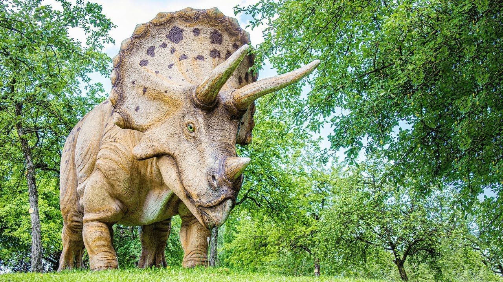

Назва «трицератопс», що буквально означає «трироге лице», походить від грецьких слів «τρί-» — «три», «κέρας» — «ріг» та «ὤψ» — «обличчя». Трицератопси були великими тваринами, що пересувалися на чотирьох ногах. Досягали завдовжки від 8 до 9 м, і 2,3 м заввишки. Маса складала 5—9 тонн. Велика голова мала три роги: один короткий над ротом і два довгих над кожним оком. За рогами містився виступ у вигляді коміра, що прикривав шию згори. Будова шкіри трицератопса відома за скам'янілим зразком з Вайомінгу, хоча офіційно він не був висвітлений у науковій літературі. Шкіру покривали шестикутні вузлики завширшки близько 5–6 см, а також більші, близько 10 см горбки з конічними виступами. На голові трицератопса було три роги. Два великих надбрівних роги, та маленький на носі. З потилиці ріс комір, обрамлений широкими кістяними шипами. Роги та комір трицератопса були продовженням черепа, складалися з кісткової тканини на відміну від, наприклад, сучасного носорога, чий ріг росте зі шкіри. Роги використовувалися як для захисту, так і в бійках за територію або самок. Комір був покритий шкірою. Можливо, на ньому був візерунок, щоб розрізняти одне одного. Раніше вважалося, що роги та комір потрібні були тільки для захисту від хижаків. Але сліди кровоносних судин вказують, що за допомогою коміра тварини могли не тільки розрізняли одне одного, а і приваблювали партнерів, і, ймовірно, використовувати їх для терморегуляції.
